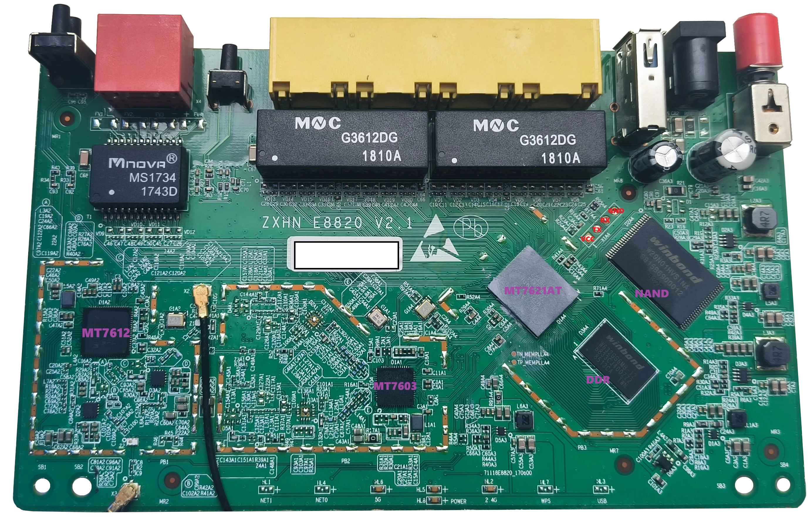

中兴 ZTE E8820S 路由器经验分享
1. 介绍
外观：白色机身，双天线，三个指示灯位于下方，天线不可拆卸，
接口：全在天线侧，包括电源、WAN、LAN1、LAN2、LAN3、LAN4、RESET、WPS、开关。WAN口和LAN口都是千兆口。
规格：双核CPU，256MB内存，128MB存储，支持2.4G和5G双频，支持IPv6*，支持USB2.0*。
价格：二手网约 40 元左右。（24年3月）
硬件参数：
- 主控芯片：联发科芯片 ramips架构的 MT7621@880MHz
- 2.4G芯片：MT7603
- 5G芯片：MT7612
- 存储芯片：NAND FLASH（128M）
- 主板内存: 256M DDR3@1200MHz
其他频率信息 Flash:125MHZ,BUS:220MHZ,Ref:40MHZ
GPIO引脚：
- POWER_LED: GPIO#16 LOW
- SYS_LED: GPIO#3 LOW
- RESET: GPIO#18 HIGH
- WPS: GPIO#8 LOW
- WIFI: GPIO#10 LOW

TTL 接法：GND接地，RX接TX，TX接RX，VCC不接
纸面参数看起来不错，但是实际使用中，有一些问题：
且没有屏蔽罩，容易干扰，倒装主板，散热不行，容易发热。
*：官方固件未开启，需要刷机。
*：看着是蓝色的接口，实际是 USB 2.0 的接口。
2. breed 不死 BootLoader 安装
在开始之前，确保你知道自己在做什么，刷机有风险，刷机有风险，刷机有风险。
如果机器背面的信息贴纸是完整的，那么就可以开始了。如果贴纸被撕掉了，那么你先要进入管理界面，保存 MAC 地址以及 SN 码。这台路由器的管理界面进入专家模式就可以看到所有信息，建议截图保存。
这台设备没有自带不死 BootLoader，所以需要先安装一个。
网上流行了一个老版本的 breed，这个版本是移植自极路由4 HC5962/B70的，功能有限，且 部分 GPIO 无法使用，无法备份 EEPROM。
所以使用新版本的 breed，新增 ZTE E8820S 专用版，支持极路由4 HC5962/B70 固件；支持 MTK SDK 分区的固件；支持启动原厂固件以及升级原厂编程器固件。
资源：breed
参考：【2022-07-26】AR/QCA/MTK Breed，功能强大的多线程 Bootloader-OPENWRT专版-恩山无线论坛
通过 ttl 线刷入 breed
没什么好说的，路由器拆开，找到串口，接上 ttl 线，然后通过串口刷入 breed。
参考：最详细的中兴E8820S的TTL刷机教程，附最完美的Padavan固件 - WiFi/路由器 数码之家
免拆路由器刷入 breed
中兴其实留有一个固件升级的接口，可以通过这个接口刷入 breed。
断开路由器电源，拔掉 Wan 口的网线
电脑打开控制面板-网络和共享中心-更改适配器设置-找到本地连接-属性-IPv4-设置为
- IP 地址：192.168.1.2
- 子网掩码：255.255.255.0
- 默认网关：192.168.1.254
打开
tftpd64.exe软件，选择设置好的网卡，breed 放在同一目录下，并重命名为ZTE_img.bin路由器断电，按住 reset 键，插上电源，等待指示灯闪烁时松开 reset 键（也可以观察
tftpd64.exe软件的提示）等待路由器重启，还原网卡设置
打开浏览器，输入
192.168.1.1，进入 breed 界面
资源：tftpd64.exe
参考：38.8元的中兴E8820S免拆刷机教程 值得一冲_哔哩哔哩_bilibili
需要注意的是，这个参考中关于 eeprom 的操作是错误的。
3. EEPROM 备份与选择
备份是一个好习惯，我们需要进入 breed 界面，然后备份 EEPROM 以及固件（编程器固件），选择原厂格式。
从原厂备份中提取 EEPROM by cjd6568358
EEPROM 选择
你可以选择备份原厂的 EEPROM，也可以使用别人的 EEPROM。
原厂 EEPROM
8820s_eeprom_b70gs_yh_nomac.bin
8820s_eeprom_yuan-gai.bin
资源
8820s_eeprom_b70gs_yh_nomac.bin
8820s_eeprom_yuan-gai.bin
EEPROM 修改
对于这台路由器，EEPROM 是十分重要的，影响了信号质量以及 5G 信号的稳定性。
下载 WinHex，打开 EEPROM，修改 MAC 地址（包括 2.4G/5G/Lan/Wan 的 MAC 地址）
WinHex 默认是 Insert 模式，所以不用担心覆盖问题。
其中 2.4G 和 Lan 和 Wan 的 MAC 地址也是一样的，5G 的 MAC 地址是 2.4G 的 MAC 地址 + 1（16进制加法）。
偏移量
2.4G MAC 地址：4
5G MAC 地址：8004
Lan MAC 地址：E000
Wan MAC 地址：E006
参考：
路由器修改mac的方法-新手入门及其它(硬件)-恩山无线论坛
路由器修改mac的方法
4. 固件
官方固件：不推荐，功能太少。
OpenWrt 固件：这个很常见，并且有很多基于此改版的固件。
- Offical 固件
- Lean 固件
- immortalwrt 固件
Padavan 固件：中兴路由器上也有
基于 OpenWrt 的固件有很多，但是都是开源驱动居多，无线很差，5G 开源驱动基本只有200M到300M的速度，闭源驱动才有 500M 的速度。而 Padavan 固件是闭源驱动，速度很快，大约有800M的速度，稳定性也很好，但是可玩性不是很强。
当前 MT7621 的性能已经有些跟不上了，如今很多便宜路由器采用 MT7981，MT7986，IPQ系列的芯片，性能更强，价格也能捡到便宜的。
汇总
中兴E8820S OpenWrt-v21.02.3 可随便装插件-OPENWRT专版-恩山无线论坛 - 手机版 - Powered by Discuz!
中兴 ZTE E8820S 折腾记录，附编译好的 OpenWrt 固件，也包含新3-OPENWRT专版-恩山无线论坛 - 手机版 - Powered by Discuz!
中兴E8820S OpenWrt-v21.02.3 带USB驱动 可插随身wifi、手机通过USB共享网络-OPENWRT专版-恩山无线论坛
中兴E8820S-R23.6.6-OPENWRT 闭源驱动-OPENWRT专版-恩山无线论坛
21.2.20更新，重新配置中兴E8820S编译LEDE固件，汉化闭源驱动无线设置-OPENWRT专版-恩山无线论坛
中兴E8820S路由器拆机及OpenWrt固件(含源代码)-OPENWRT专版-恩山无线论坛 - 手机版 - Powered by Discuz!
【固件】ZTE-8820S老毛子纯净固件，基于hanwckf大源码更新部分软件包
e8820s-4.4-padavan
e8820s-4.4-padavan-1
Openwrt firmware for mediatek mt7621
OpenWrt Downloads
padavan
以上顺序不分先后，可以根据自己的需求选择。
在线固件编译
openwrt.ai
打开这个网址，选择 8820s，可以定制固件，选择自己需要的插件，然后下载。注意非捐赠用户每日只能定制一个固件。
也可以到Github上下载源码，自己编译。
fw.wrt.moe
这个也是一个定制固件的网站，选择 8820s，可以定制固件。
https://firmware-selector.immortalwrt.org/
immortalwrt，没什么好说的，直接选择 8820s，编译好的固件。
刷入固件
在刷入固件前，需要先刷入修改好的 EEPROM。并确定 MAC 地址已经修改。
然后通过 breed 界面刷入固件。
恢复原厂固件
折腾这么久，总觉得不称心如意？累了？还是回归原厂吧。
以下操作建议认真阅读参考后再进行。
断电，拔掉 Wan 口的网线，按住 reset 键，插上电源，等待指示灯闪烁时松开 reset 键
电脑打开
192.168.1.1telnet 登录
telnet 192.168.1.1HFS 文件服务器上传原厂固件
wget http://192.168.1.2/full.bin这个地址和文件是根据你自己的情况来的记录下 Saving to address 后面的内存地址和 Length: 后面 0x 开头的数据大小读入备份文件的内存起始地址是 0x80001000，数据大小是 0x7f80000擦除 Flash：flash是breed的内部命令，用于NAND的读取写入擦除等操作执行命令
flash erase 0x0 0x7f80000
清除flash 从地址0x0 长度0x7f80000 127M，对应上面一步读入的备份文件长度这时候NAND flash 已经全部清空，千万别重启别断电！！！写入数据：执行命令
flash write 0x0 0x80001000 0x7f80000
把内存起始地址0x80001000 长度为0x7f80000的数据从0x0开始写入闪存，
显示 Succeeded 原厂编程器固件写入完成，重启就行了
以上操作是breed从内存中进行的，如果失败，路由器必砖，所以一定要小心，别出差错，真变砖了，相对简单的方法只有换spi闪存了
最后，在 breed 界面恢复原厂的 BootLoader。
参考：
E8820s无线路由器轻松刷回原厂固件
中兴E8820S刷回原厂固件经验分享
UBOOT
一种在线定制 MT7621 u-boot 的方法
uboot-mt7621
OpenWrt 使用经验
OpenWrt 使用 IPv6 进行远程访问 LAN 下设备
由于我有远程桌面的需求，然，受困于没有 IPv4 公网 IP，所以只能使用 IPv6 进行远程访问。
防火墙设置 区域
lan > wan 入站接受，出站接受，转发拒绝
wan > reject 入站接受，出站接受，转发拒绝
通信规则添加一条
名称随意协议：TCP/UDP
源区域：任意区域（转发）目标区域 LAN
源端口：3389
其余默认即可
OpenWrt 访问光猫
接口新建 modem
协议：静态设备：wan
开机启动：勾选
ipv4地址：192.168.1.254（你光猫的网段，地址随意，只要没有设备链接即可）
prefix：24
强制链路：勾选
使用网关跃点：100
委托IPv6前缀：勾选
防火墙放在和 wan 一样的区域
其余默认即可
软件包问题 24年12月10日更新
我使用了 OPENWRT.AI 的自助构建固件，然最近作者更新了主线，默认的 opkg 仓库直接炸了，导致无法安装插件
故此修改了 opkg 仓库地址，可以正常安装插件了。
我的固件应是最新主线 24.10.0-rc2 之前最后一个版本 23.05.0
内核版本 5.15.167
1 | src/gz openwrt_core https://downloads.openwrt.org/releases/23.05.0/targets/ramips/mt7621 |
直接在软件包管理中添加源，然后更新软件包列表，就可以正常安装插件了。